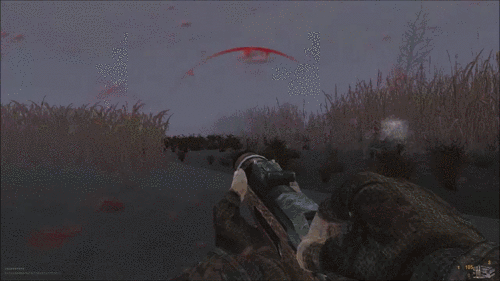
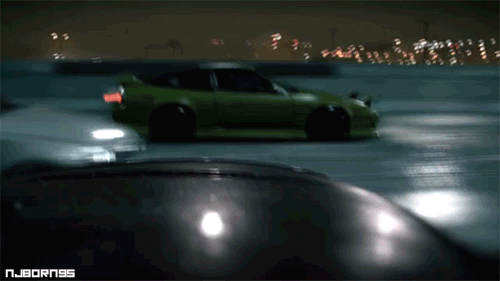

Компьютерная игра в жанре шутер от первого лица на тему Второй мировой войны, первая игра в одноимённой серии. Игра была разработана компанией Infinity Ward и издана компанией Activision 29 октября 2003 года для платформы PC. Игра основана на движке Id Tech 3. Тема и игровой процесс Call of Duty похожи на Medal of Honor, которая также состоит из одиночных миссий и кампаний, однако, в отличие от Medal of Honor, войну можно увидеть не только глазами американского солдата, но также советского и британского.

S.T.A.L.K.E.R
Компьютерная игра в жанре шутер от первого лица, разработанная украинской компанией GSC Game World и изданная 20 марта 2007 года в США и Канаде и 23 марта 2007 года - в Европе и СНГ.Жанр игры производителем определяется как «Survival FPS» с элементами RPG: подразумевается, наряду с элементами обычного 3D-шутера, наличие постоянно враждебной по отношению к игроку окружающей среды, что, соответственно, должно существенно усложнять условия выживания.

Need for Speed
Серия гоночных компьютерных игр, выпускаемая компанией Electronic Arts и разработанная в нескольких студиях, включая канадское отделение EA Black Box, британскую компанию Criterion Games и шведскую Ghost Games. В настоящее время разрабатывается под брендом EA Sports.